.png)
[8100]주식종합
원샷 원킬,
종합화면의 정석
주식 매매 시 다양한 주식 정보를 한 화면에서 동시에 확인함으로써, 보다 빠른 판단과 신속한 매매가 가능하다는 점은 매우 중요합니다.
[8100]주식종합 화면은 매매에 필요한 다양한 정보 중 핵심적인 정보만을 골라 화면을 구성한 통합정보 제공 종합 화면입니다.
판단에서 주문까지, 모든 정보를 한 눈에
이 화면이 필요한 이유!
| 특징 | 이런 점이 좋아요 |
|---|---|
| 올인원 종합화면 구성 | 관심종목, 뉴스, 호가, 잔고, 주문까지 투자에 필요한 기능을 모두 갖춘 화면 |
| 실시간 종목 정보 연동 | 선택한 종목의 시세, 뉴스, 호가 등이 동시에 업데이트되는 빠르고 직관적인 매매 환경 |
| 화면 전환 최소화 | 매매 타이밍을 놓치지 않도록 이동 없이 단일 화면에서 여러 기능 처리 |
단 하나의 화면, 매매의 모든 흐름을 연결합니다
01기본 화면 구성
LS증권 [8100]주식종합화면 은 관심종목, 현재가, 주문, 잔고현황 및 뉴스 / 공시화면 등 자주 이용하는 화면들을 하나의 화면으로 구성하여 매매 편의성을 높인 구조로 설계되어 있습니다.
해당 화면은 총 4개의 영역으로 구분되어 있습니다.
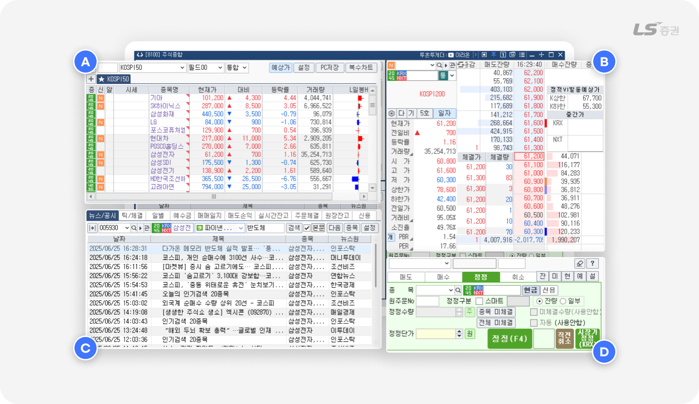
화면은 다음과 같이 4개 영역으로 나뉘며, 사용자 시선의 흐름에 따라 기능이 배치되어 있습니다.
| 영역 | 주요 기능 | |
|---|---|---|
| A | 관심종목 관리 | 관심종목을 저장하고 시세 및 각종 정보를 확인할 수 있습니다. |
| B | 호가 / 체결 정보 | 선택한 종목의 매수/매도 호가 및 체결량 등의 정보를 확인할 수 있습니다. |
| C | 투자 정보 | 뉴스 / 공시, 예수금, 실시간 잔고 등을 확인할 수 있습니다. |
| D | 주문 실행 | 매도/매수/정정/취소 주문을 접수할 수 있습니다. |
전략대로 쪼개고, 다르게 담아냅니다
02관심종목 관리 (A영역)
실시간 종목 시세 및 정보 조회
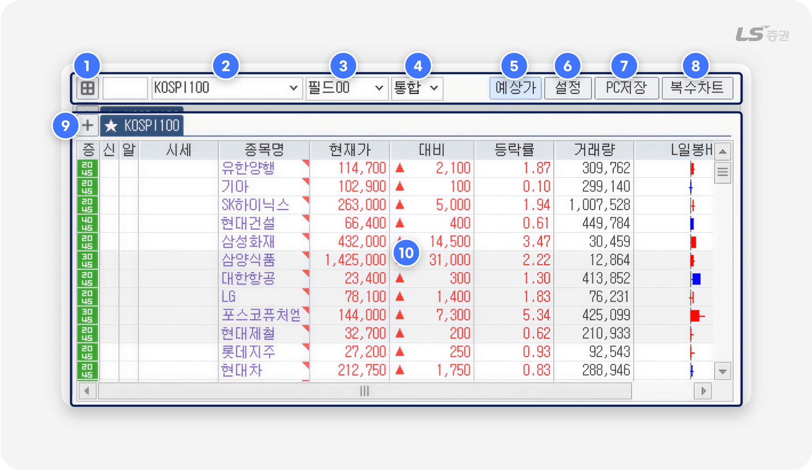
-
1
관심그룹 분할 보기
- 한 화면에서 여러 개의 관심종목 그룹을 볼 때 이용합니다.
- 버튼 클릭 시 확인할 관심그룹의 갯수와 배치 방법을 설정할 수 있습니다.
-
2
관심그룹 선택
- 관심그룹 목록을 조회하고 조회할 관심그룹을 선택할 수 있습니다.
- 목록 선택란 좌측에 그룹 번호를 직접 입력해서 관심 그룹을 조회할 수도 있습니다.
-
3
필드그룹 선택
- 선택한 필드그룹에 따라 관심종목 목록(10번)에서 조회하는 필드(항목)의 종류가 변경됩니다.
- 설정버튼(6번)을 클릭해 필드그룹 별로 조회하려는 필드를 편집할 수 있습니다.
-
4
거래소 선택
- 거래소에 따라 조회할 시세를 선택할 수 있습니다.
항목 설명 통합 통합시세(KRX + NXT) 제공 KRX KRX 시세 제공 NXT NXT 시세 제공 (NXT 선정 종목만 제공 가능) -
5
예상가 조회 전환 버튼
- 현재가, 대비, 등락률, 거래량 등이 예상체결값으로 표시되고, 기타 예상수치 항목을 필드에서 추가로 조회할 수 있습니다.
- 버튼을 클릭해 일반 시세와 예상가 조회를 전환할 수 있습니다.
-
6
설정 버튼
- 관심그룹 및 관심종목을 편집하고 관리하는 팝업 화면이 표시됩니다.
-
7
PC저장 버튼
- 현재 사용중인 PC에 현재 관심그룹과 관심종목을 저장합니다.
- 다른 PC나 모바일 앱에서는 저장한 관심종목을 불러올 수 없으며, 다른 환경에서도 동일한 관심종목을 조회하려면 ‘설정‘ 버튼을 클릭해 ‘서버에 저장하기(전체)’ 버튼을 클릭해 주세요.
-
8
복수차트 버튼
- 복수의 관심종목을 선택해 [4000] 통합차트 또는 [4201] 종합차트(구 xing차트1) 에서 분할화면으로 복수의 차트를 조회합니다.
- 목록 선택란 좌측에 그룹 번호를 직접 입력해서 관심 그룹을 조회할 수도 있습니다.
-
9
새 관심그룹 추가
- 관심그룹을 새로 만들어 탭에 추가하고 관심종목을 추가 또는 편집할 수 있습니다.
- 변경 사항을 저장하려면 ‘PC저장‘ 또는 ‘설정’버튼에서 ‘서버에 저장하기(전체)’를 선택합니다.
-
10
관심종목 목록
- 선택한 관심그룹의 관심종목 목록과 데이터 필드를 조회합니다.
관심그룹을 어떻게 나눌지 기준이 고민된다면?
- 단기테마, 보유 종목 리스크 관리 등 매매 목적별로 관심그룹을 나눠 설정하면 장중 빠른 판단과 선택에 유리합니다.
참고해주세요!
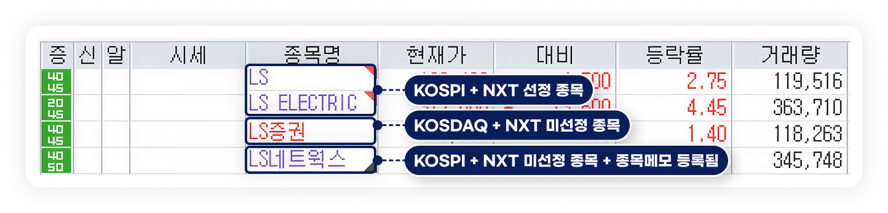
종목명 색상과 표식 설명
- 보라색 종목명 : KOSPI(코스피) 종목
- 붉은색 종목명 : KOSDAQ(코스닥) 종목
- 우측 상단 붉은 삼각형 표식 : NXT(대체거래소) 선정 종목
- 우측 하단 검은 삼각형 표식 : 종목메모가 등록된 관심종목
- ‘설정’ 버튼 - ‘필드편집’ 탭에서 ‘장구분색보다 종목상태색 우선’ 을 해제하면 KOSPI / KOSDAQ 시장 종목 구분이 해제되어 모든 종목명이 동일한 검은색으로 표시됩니다.
- 편리한 기능 - 설정 - 화면설정 메뉴에서 'NXT(대체거래소) 종목 구분 표시'를 설정하거나 해제할 수 있습니다.
끊김 없이 흐름을 읽고, 매수 타이밍을 앞서 포착합니다
03체결 및 호가 (B영역)
호가 정보 설정 및 연결 기능
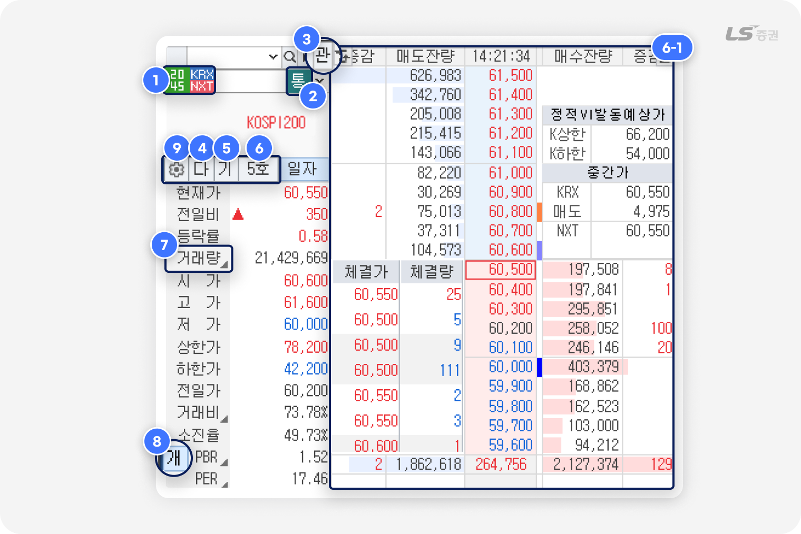
-
1
현재 종목의 거래소별 증거금률을 확인할 수 있습니다.
KRX와 NXT 중 어느 거래소에 속해 있는지에 따라 증거금률과 신용 가능 여부가 다르며, 매수 가능 수량이나 주문 가능 조건에 직접 영향을 줍니다. -
2
시세 제공 및 매매 대상 거래소를 선택할 수 있습니다.
항목 설명 통 KRX + NXT 통합 시세 제공 별 KRX와 NXT 시세를 동시에 구분 제공 K KRX 시세만 N NXT 시세만 -
3
해당 종목을 관심그룹에 바로 추가 또는 삭제할 수 있는 기능입니다.
-
4
클릭 시, 전자공시(DART) 정보가 팝업으로 열려 공시 확인이 가능합니다.
-
5
LS증권 상장기업분석 화면으로 연결되어 재무제표, 실적 추이, 주요 투자지표 등을 확인할 수 있습니다.
-
6
호가창 유형을 선택할 수 있으며, ‘5호가’, ‘10호가’, '상세'로 구분되며, 선택 시 호가영역(6-1번)에 바로 반영됩니다.
→ 원하는 정보량과 거래 스타일에 맞게 호가창을 구성할 수 있습니다. -
7
항목 우측 하단에 회색 삼각형 아이콘이 표시된 경우, 클릭하면 다른 항목으로 전환되어 추가 데이터를 확인할 수 있습니다.
→ ‘거래량’ 항목을 클릭하면 ‘거래대금’ 항목과 데이터로 전환되고, 다시 클릭하면 ‘거래량’ 항목을 확인할 수 있습니다. -
8
‘개’ 또는 ‘연’ 아이콘은 재무제표 유형을 나타냅니다. ‘개’는 개별 재무제표이며, 본사 기준의 실적이며, ‘연’은 연결 재무제표로, 자회사 등을 포함한 전체 기업집단 기준의 실적입니다.
→ 분석 시 기업의 사업 구조나 연결 종속법인을 고려해 판단 기준을 선택할 수 있습니다. -
9
클릭 시 호가 설정 상세 화면이 열립니다.
기본 호가 유형, 색상, 호가 단위 등을 직접 설정할 수 있습니다.
빠르게 확인하고, 더 정확하게 판단합니다
04투자 정보 (C영역)
뉴스 · 공시 정보 확인 기능
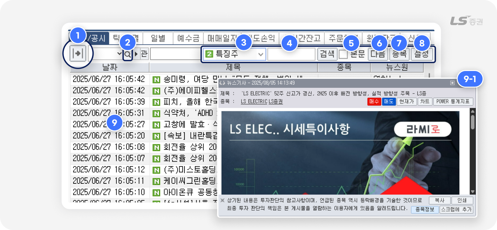
-
1
뉴스 / 공시 상세 조회
- 뉴스원별, 카테고리, 종목뉴스, 관심종목, 보유종목, 스크랩 등 상세 조회 조건을 설정하는 영역을 펼치거나 닫습니다.
-
2
종목검색
- 입력한 종목과 관련된 뉴스를 검색합니다.
-
3
실시간 검색어 순위
- 실시간으로 검색어 순위를 조회합니다.
-
4
검색어 입력
- 입력한 검색어를 포함한 뉴스를 검색합니다.
-
5
본문 검색 옵션
- 체크 시 검색어가 뉴스 본문에 포함된 경우를 검색합니다.
-
6
다음 뉴스 조회
- 마지막 목록보다 과거의 뉴스 목록을 일정량 조회합니다.
-
7
종목 / 전체 검색 전환
- 선택한 관심종목의 뉴스만 검색하거나, 전체 뉴스를 검색한 결과를 전환해서 조회할 수 있습니다.
-
8
설정 버튼
- 검색 정확도, 내용 표시 방법, 연동화면, 즐겨찾기 검색어 등 뉴스 검색과 관련된 상세 조건을 설정할 수 있습니다.
-
9
뉴스 목록
- 검색한 뉴스 목록이 표시됩니다.
- 목록을 더블클릭하면 팝업(9-1번)에서 뉴스 기사 본문을 확인할 수 있습니다.
- 뉴스 기사 팝업(9-1번)에서 매수, 매도, 현재가, 차트, 인쇄, 스크랩 등을 이용할 수 있습니다.
더 많은 뉴스 기능이 필요할 때 유용한 화면 소개
[3101] 뉴스센터, [3102] 종목뉴스 화면에서는 뉴스에 특화된 기능을 상세하게 설정할 수 있습니다.
- 뉴스 제목 클릭 시, 본문을 화면 하단에서 조회할지 별도의 팝업으로 조회할지 설정할 수 있습니다.
- PC 저장하기 : 특정 PC에만 저장하며 해당 PC에서만 데이터를 불러 올 수 있습니다.
- 뉴스 제목 클릭 시, 관련 종목 정보가 다른 HTS 화면에 연동되도록 설정할 수 있습니다.
- 뉴스시황 설정창에서 즐겨찾기 검색어(예 : 반도체)를 입력하면 해당 단어가 포함된 뉴스 제목의 색상을 다르게 표시하도록 설정할 수 있습니다.
틱 / 체결 데이터 확인 기능
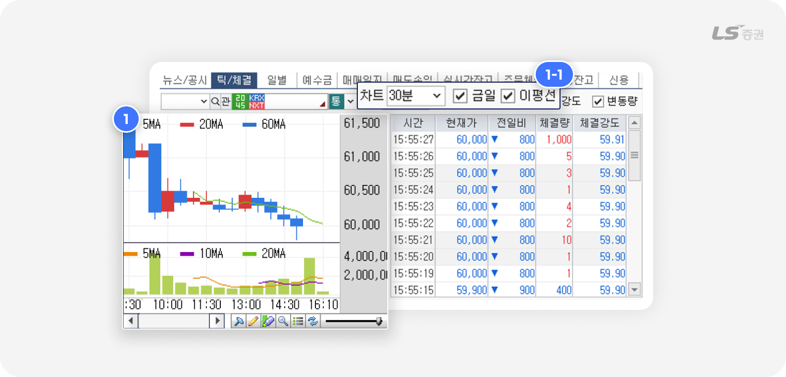
-
1
틱 차트는 시간 단위, 금일 여부, 이동평균선 여부(1-1번)에 따라 표시 방식이 달라집니다.
→ 설정 항목에 따라 차트에 반영되는 정보가 실시간으로 달라집니다. -
2
시간 단위는 실시간 / 30초 / 1분 / 5분 / 10분 / 30분 중에서 선택할 수 있습니다.
→ 단타부터 중기 흐름까지 다양한 투자 스타일에 맞게 활용 가능합니다.
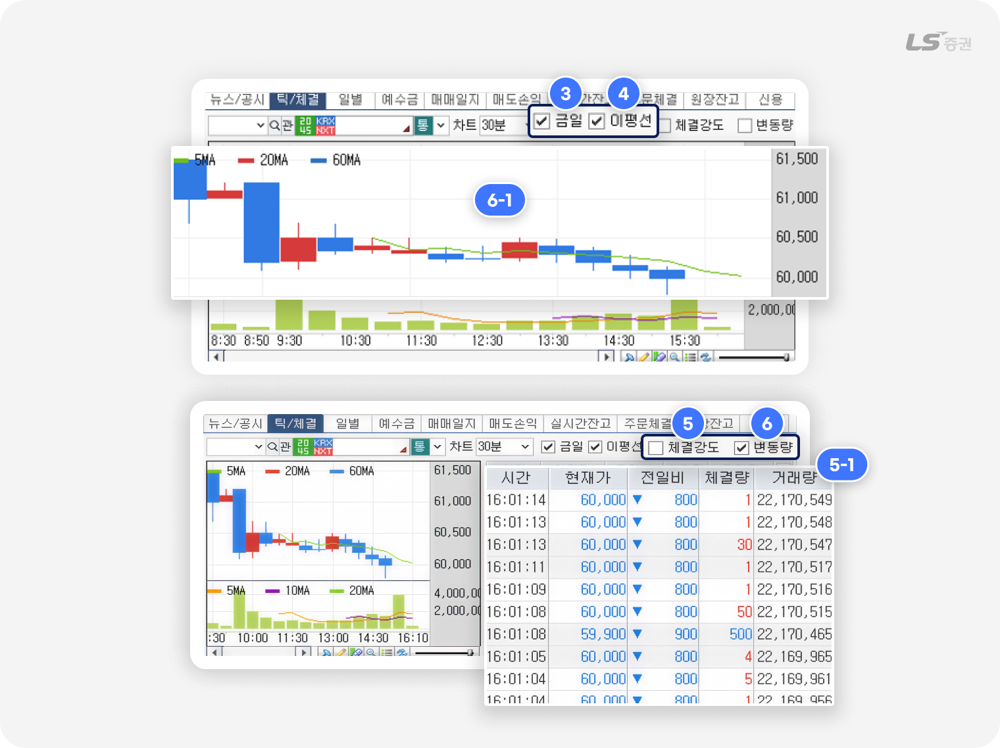
- 틱 / 체결 차트 설정 항목별 기능 변화
| 번호 | 항목 | 체크 시 동작 | 체크 해제 시 동작 |
|---|---|---|---|
| 3 | 금일 | 당일 체결 데이터만 표시 | 과거 데이터 포함 기능 |
| 4 | 이동평균선(이평선) | 5일, 20일, 60일 이동평균선 차트에 표시됨 | 이동평균선 미표시 |
| 5 | 체결강도 | 체결강도 수치가 (5-1번)영역에 표시됨 | 체결강도 대신 거래량(5-1번) 표시됨 |
| 6 | 변동량 | 틱 차트 우측에 데이터 영역(5-1번) 추가됨 | 데이터 노출 영역(5-1번)은 사라지며 틱 차트(6-1번)만 단독 표시됨 |
일별 시세 데이터 확인 가능
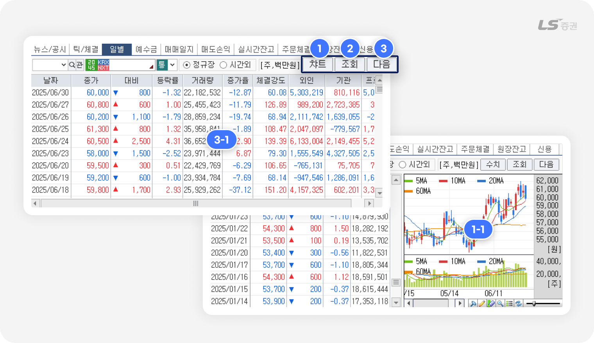
| 번호 | 항목 | 설명 |
|---|---|---|
| 1 | 차트 / 수치 교차 버튼 | 증가율, 체결강도, 기관 거래량 등 (1-1번) 영역의 일봉 차트 표시 전환 |
| 2 | '조회' 버튼 | 현재일 기준의 데이터로 변경 |
| 3 | '다음' 버튼 | 현재 화면에 표시되지 않은 과거 일자 데이터가 (3-1번) 영역에 반영 |
계좌 상태 및 손익 흐름 확인 기능
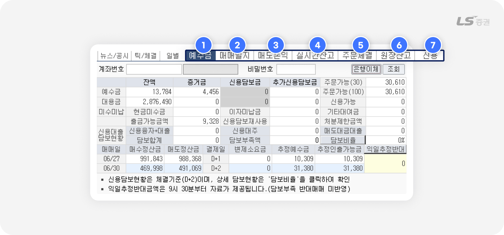
-
1
예수금 조회
- 보유 현금, 미수금, 증거금, 추정 인출 가능 금액을 확인할 수 있습니다.
- 은행 이체 화면과 연동되어, 입출금까지 한 화면에서 처리 가능합니다.
-
2
매매일지
- 매매일자별로 체결 내역, 약정 금액, 수수료 및 제비용을 확인할 수 있습니다.
- 거래 이력 복기나 일자별 손익 점검에 활용됩니다.
-
3
매도손익
-
일자별 실현손익과 수익률을 확인할 수 있습니다.
※ 단, 채권매매, 신용이자, 대출이자는 손익 계산에 포함되지 않으므로 해석 시 주의가 필요합니다.
-
일자별 실현손익과 수익률을 확인할 수 있습니다.
-
4
실시간 잔고
- 보유 종목 기준으로 매수평균단가, 손익분기점 단가(BEP) 등을 실시간으로 확인할 수 있습니다.
- 종목을 클릭하면 일괄 매도/정정/취소 화면으로 바로 이동되어 빠른 주문 처리가 가능합니다.
-
5
주문체결
- 일자별 체결 내역과 미체결 상태를 조회할 수 있으며, 미체결 종목 선택 시 일괄 정정·취소 화면으로 연결됩니다.
-
6
원장잔고
- 전체 보유 종목 현황을 조회할 수 있습니다.
- 실시간 잔고는 아니며, 조회 버튼으로 갱신이 필요합니다.
- 제비용(수수료, 세금 등)은 포함되어 있지 않습니다.
- 종목 클릭 시 일괄주문 화면으로 이동 가능합니다.
-
7
신용현황
- 특정 종목에 대한 융자·대주 내역, 신규 및 상환 금액을 일자별로 확인할 수 있습니다.
- 계좌의 신용 잔액과 상환 계획 점검, 레버리지 관리에 유용합니다.
평균단가 vs BEP 단가
- 평균단가 : 분할 매수 시, 총 매입금액 ÷ 총 수량으로 계산된 평균 매입단가
- BEP단가 : 수수료 · 세금 등 제비용까지 포함해 손익이 0이 되는 실질 매도 기준 가격
원클릭으로 더 빠르게 주문하는 방법
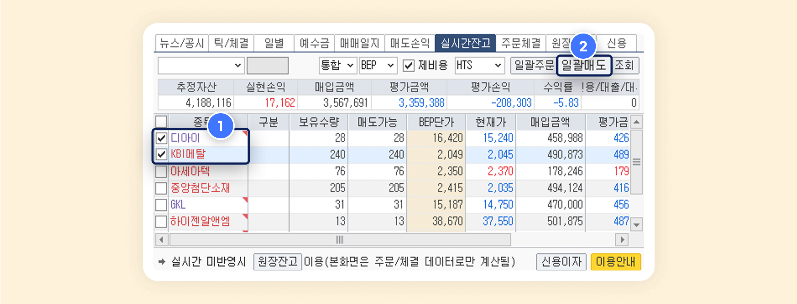
장 마감 직전에 여러 종목을 정리해야 하거나 급등락 종목에 대응할 때, 실시간잔고 탭에서 일괄 매도 기능으로 포지션을 신속하게 정리할 수 있습니다.
-
1
대상 종목 선택
- 주문할 종목명 좌측의 체크박스(1번)을 체크합니다.
-
2
일괄 매도 주문
- ‘일괄매도’ 버튼을 클릭하면 복수종목일괄청산(매도) 팝업에서 주문유형, 단가를 선택한 후 ‘일괄주문’ 버튼을 클릭해 일괄 매도 주문을 실행할 수 있습니다.
한 번의 입력으로, 빠르게 실행합니다
05주문 실행 (D영역)
기본 주문 입력 기능
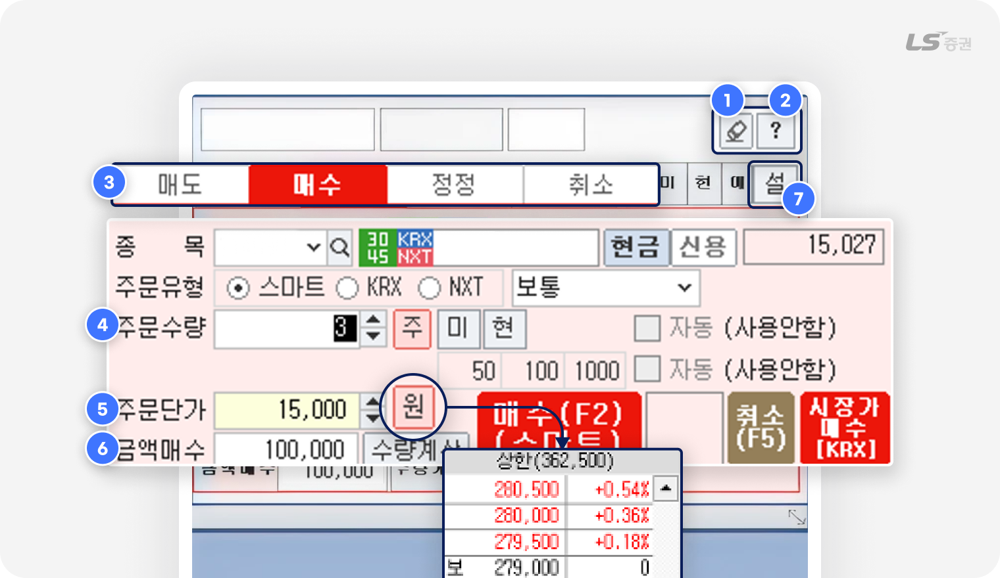
-
1
주문 입력 초기화
- 지우개 버튼을 클릭 시 입력된 종목, 수량, 가격 등의 주문 정보가 모두 초기화됩니다.
- 종목을 교체하거나 주문 내용을 처음부터 다시 입력할 때 빠르게 초기화할 수 있어 실수 방지에 유용합니다.
-
2
주문 시 유의사항 안내
주문창 상단의 ‘?’ 버튼을 클릭하면, 주문 유형별 설명과 함께 실전 유의사항이 담긴 팝업이 열립니다.
해당 팝업에서는 다음과 같은 항목을 확인할 수 있습니다.- 지정가 / 시장가 / 조건부 지정가 / 최유리지정가 / IOC / FOK 등 주문 방식
- 장전 · 장후 시간외 거래 조건과 가능 시간
- 스탑 지정가, 조건가 등 특수 주문 설명
- 체결불가, 초과 주문 등 주요 유의사항 안내
-
3
주문 버튼 및 연동 기능
- 매도/매수/정정/취소 버튼이 나란히 배치되어 있으며, 입력한 조건에 따라 즉시 주문을 실행할 수 있습니다.
- 또한 우측에 있는 잔고 / 미체결 / 현재가 / 예수금 / 설정 버튼을 통해 관련 기능 화면으로 빠르게 전환할 수 있습니다.
주문 입력 항목
번호 항목 설명 4 주문 수량 입력 매수/매도 주식 수량을 직접 입력
자주 사용하는 수량 단위를 설정하면 클릭 한 번에 입력 가능
(예 : 50과 100 을 순서대로 클릭하면 150주 입력)5 주문 단가 입력 1주당 주문 금액을 직접 입력
‘원’ 버튼 클릭 시 선택한 종목의 호가창에서 단가 선택 가능6 금액기준 자동 계산 주문단가, 총 매매금액을 입력하고 ‘수량계산‘ 버튼 클릭 시 주문수량이 계산되어 자동 입력됨. -
7
주문설정 팝업
- ‘설’ 버튼 클릭 시 주문설정 팝업이 표시됩니다.
주문 설정 기능
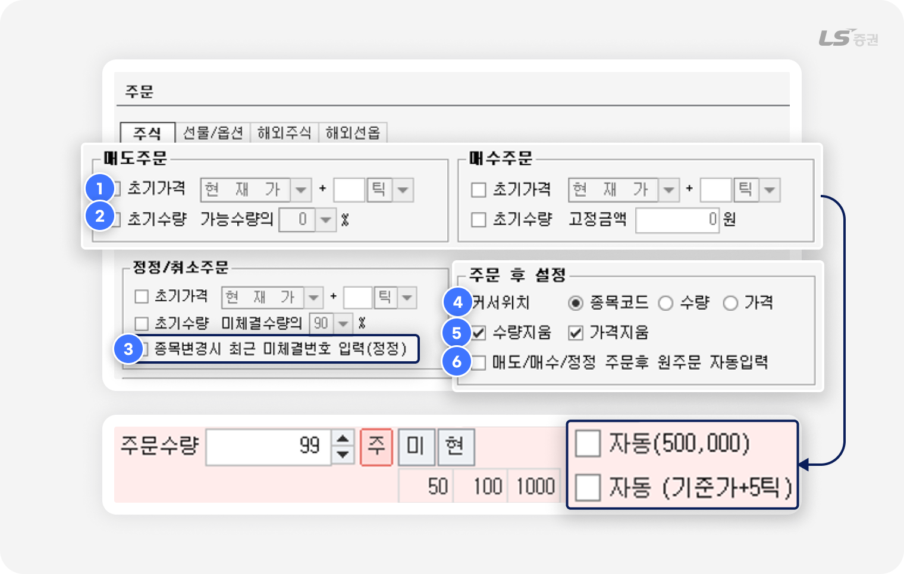
주문 전 자동 입력 설정
-
1
초기가격 : 체크 시 매도/매수/정정 주문 화면에서 주문단가에 초기 설정 가격이 자동 입력됩니다.
-
2
초기수량 : 체크 시 매도/매수/정정 주문 화면에서 주문수량에 초기 설정 수량이 자동 입력됩니다.
-
3
종목변경 시 최근 미체결번호 입력(정정) :
체크 시 정정/취소 주문 화면에서 직전 미체결 주문 번호를 자동 입력합니다.
주문 후 설정
-
4
커서위치 : 주문 후 커서가 이동할 곳을 지정합니다.
-
5
수량지움 / 가격지움 : 체크 시 주문 시 입력한 수량 또는 가격을 주문 실행 후 유지하지 않고 삭제합니다.
-
6
매도/매수/정정 주문후 원주문 자동입력 :
체크 시 정정/취소 주문 화면을 조회하면 최근 매도/매수/정정 주문 번호가 자동 입력됩니다.
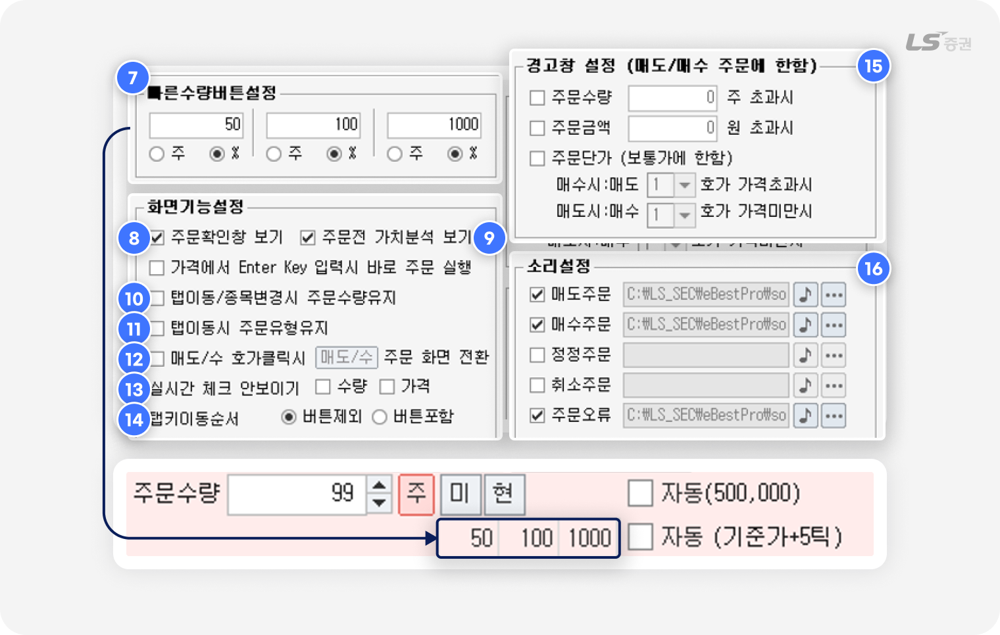
빠른 수량 버튼 설정
-
7
매도/매수 주문 화면에서 클릭으로 입력하는 주문수량 기준을 설정할 수 있습니다.
총 3개의 기준을 미리 설정할 수 있으며, 수량(주) 및 주문가능수량 대비 비율(%) 중 선택할 수 있습니다.
화면 기능 설정
-
8
주문확인창 보기 : 체크 시 착오주문 방지를 위해 주문 실행 전 확인창을 표시합니다.
-
9
주문전 가치분석 보기 :
체크 시 위험 종목을 선택한 경우 주문 화면이 노란색 배경으로 변경되고 경고 메세지를 표시합니다.
-
10
탭이동/종목변경시 주문수량유지 : 체크 시 종목을 변경하거나 탭 전환 시 입력한 주문수량을 유지합니다.
-
11
탭이동시 주문유형유지 : 체크하면 매도/매수 주문 화면 전환 시 선택한 거래소와 주문유형을 유지합니다.
-
12
매도/수 호가클릭시 주문 화면 전환 :
체크 시 클릭한 호가가 현재가보다 높으면 매도 주문 화면, 낮으면 매수 주문 화면으로 전환됩니다.
-
13
실시간 체크 안보이기 :
체크 시 초기가격(1번)과 초기수량(2번)에 체크하면 주문 화면에 표시되는 자동 체크박스를 숨깁니다.
-
14
탭키이동순서 : 체크 시 탭 키를 눌러 이동할 때 커서가 ‘주’ ‘가능’ 등 주요 버튼을 포함할지 여부를 선택합니다.
경고창 설정
-
15
매수/매도 주문 시 설정한 조건에 해당하면 주문 전 경고창을 표시해 착오주문을 방지하도록 도와줍니다.
소리설정
-
16
주문 접수가 완료되거나 주문 오류 발생 시 알림음을 설정할 수 있습니다.
주문 수량 / 주문 단가 자동 입력으로 주문 속도 높이기
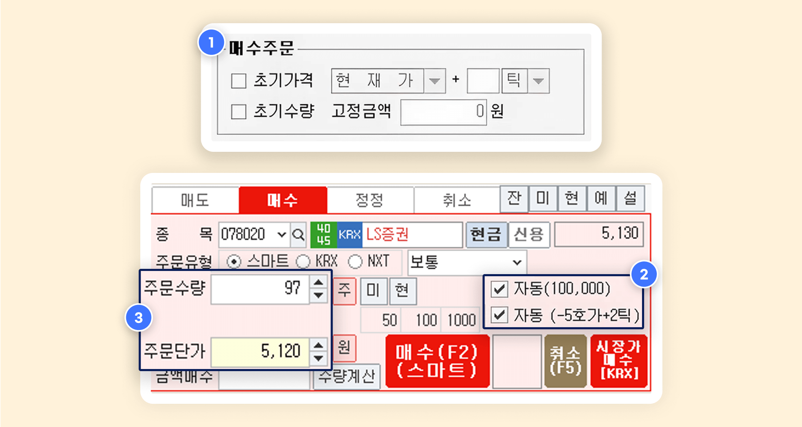
초기가격이나 초기수량을 사전에 설정해 두면, 주문 화면에서 종목을 입력하는 즉시 주문 수량 또는 주문 단가가 자동으로 입력됩니다. 종목을 고르고 주문 버튼만 누르면 되니 매매 과정이 간단하고 빨라져요.
-
1
‘종합환경설정’ - 주문 설정에서 ‘초기가격’ 또는 ‘초기수량’을 체크하고 요건을 입력합니다.
-
2
자동 입력이 설정된 상태에서 종목코드를 입력합니다.
-
3
설정한 초기가격 또는 초기수량에 맞춰 주문수량, 주문단가가 자동 입력되는 것을 확인할 수 있습니다.
지금까지 LS증권 투혼 HTS [8100] 주식종합 화면의 다양한 기능과 설정 방법을 살펴보았습니다. 감사합니다!